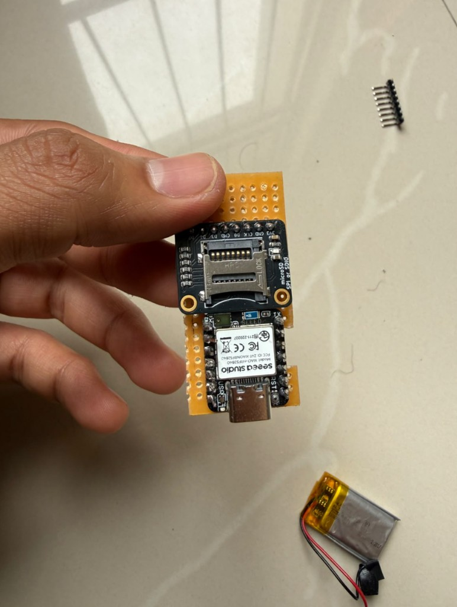
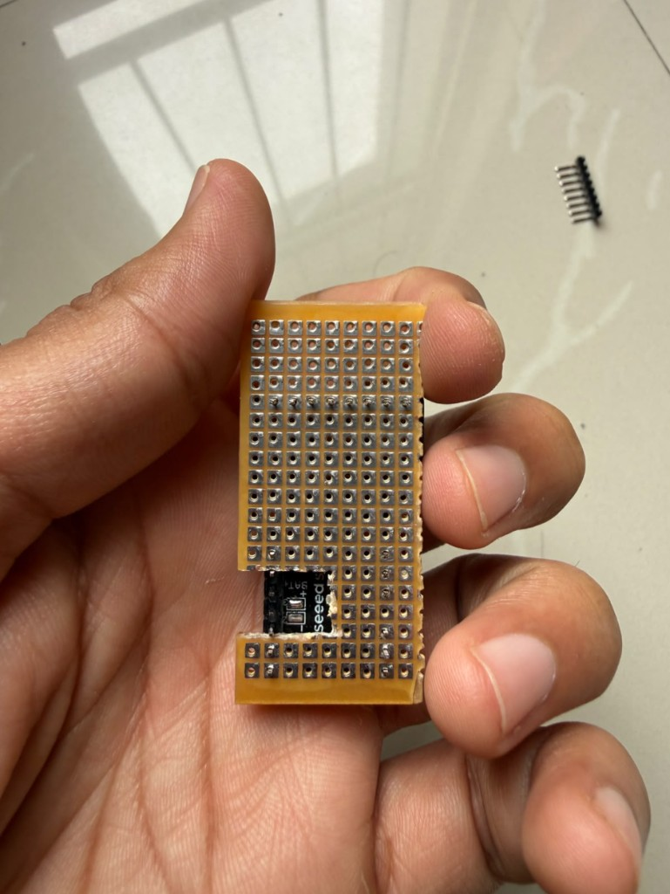
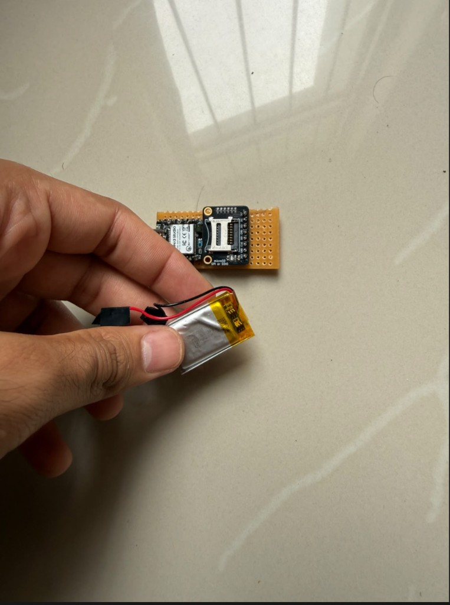

OpenPendant · hardware
This matches the board in your photos: USB at the bottom, XIAO, then the microSD module on the same face, spare holes at the top for the button. Solder every digital joint first. The LiPo goes on the back of the strip last, through the BAT window you already cut. Red to BAT+, black to BAT− — not onto the GND bus.
Drag to orbit, scroll to zoom. Use Solder to explode the stack, Closed to check USB and the button hole, Case to judge the shell. Click a part. Needs no internet if you open the HTML from the docs/ folder.
Click a part. Solder view is your strip: XIAO + SD on the front, LiPo exploded off the back, gold BAT pads in the window. Grey dots near USB are SWD, not battery.
USB at one short edge. XIAO then SD in a line on the world face. BAT window already cut so the LiPo can sit against the back after the jumpers are done.



The strip is about 8 × 18 holes (20 × 46 mm). That is the XIAO, a gap, the SD module, and 2–3 spare rows at the top for the button. The LiPo (20 × 30) covers the back of the XIAO after the joints are done.
| Part | Size (mm) | Where |
|---|---|---|
| Perfboard strip | 20.3 × 45.7 × 1.6 | 8 × 18 holes. USB on the bottom edge. BAT window on the XIAO back. |
| XIAO nRF52840 | 21.0 × 17.5 × 3.5 | Front, USB flush at the bottom. BAT pads through the window. |
| microSD SPI/SDIO | ≈ 20 × 18 × 3 | Front, above the XIAO. Header faces the XIAO. Slot toward the top. |
| 2-pin tactile | Ø6 × 5 + 1.8 plunger | Spare holes above the SD (C4 R1 / C6 R1). Plunger through the lid. |
| 22 µF cap | ≈ Ø5 or 1206 ceramic | Across SD 3V3 and GND (adjacent pins). 16 V ceramic preferred. |
| WLY602030 LiPo | 30 × 20 × 6 | Back of the strip, last. PCM at the BAT window. Not on the GND bus. |
| Finished sandwich | ≈ 23 × 48 × 15 | Front: XIAO + SD + button. Middle: FR4. Back: LiPo only. |
Digital stuff on the front of the strip. Battery on the back, after those joints are done. Shared GND is for the SD module, the button, and the 22 µF — not for the LiPo.
| Layer | What lives there |
|---|---|
| World face | XIAO (mic out), SD slot, Ø6 button, USB-C at the bottom |
| FR4 strip | GND bus, 3V3, SPI jumpers on the copper side, 22 µF across SD 3V3/GND |
| Chest face | LiPo only, after every other joint. Leads through the BAT window. |
Headers already on the XIAO are fine. Clip the tails flush on the battery side so the pouch sits flat.
Solder these on the back of the strip, in the gap between the XIAO and the SD header. USB at the bottom, component face toward you: D10 sits on the left (5V, GND, 3V3, then D10). D0–D6 are on the right. SD silk, left to right toward the XIAO: 3V3 GND CLK D3 CMD D0 D1 D2. Leave SD D1 and SD D2 unconnected. Button is XIAO D1. Do not use XIAO 5V.
Back, USB at the bottom: D0–D6 and the BAT pads are on the left. The four dots near USB are SWD, not battery.
| From | To |
|---|---|
| SD 3V3 | XIAO 3V3 — never 5V |
| SD GND | XIAO GND (this is the shared digital ground) |
| SD CLK | D9 |
| SD CMD (MOSI) | D8 |
| SD D0 (MISO) | D7 |
| SD D3 (CS) | D6 |
| SD D1, D2 | No connect |
| 22 µF | Across SD 3V3 and SD GND |
| Button NO | D1 |
| Button COM | XIAO GND (same bus as SD GND) |
| LiPo red (last) | BAT+ in the window |
| LiPo black (last) | BAT− in the window |
Meter the button: open until pressed, then D1 shorts to GND. If swapped, swap the two button leads.
Digital joints first. LiPo on the back last — the order you described.
Conversation is in front of you, so the XIAO component face (mic) points away from your chest. The LiPo is the chest pad. IMU sleep will see walking motion; that is expected. Charge without opening the case: plug USB-C into the bottom window.
Two-piece snap clamshell sized to your strip: XIAO + SD on the front, LiPo on the back. About 26 × 59 × 18 mm closed (with bail). USB-C on the bottom. Ø6.6 hole over the button.
| File | What |
|---|---|
| pendant_case_print.stl | Both halves on one plate |
| pendant_case_back.stl | Chest shell + cord bail |
| pendant_case_front.stl | World lid: mic, LED, button holes |
| pendant_case.scad | Parametric source if you resize |
| generate_case.py | Rebuilds the STLs (Python 3, no extras) |
Slicer: drop in the print plate STL. Units are millimetres.
| mm | |
|---|---|
| Inner cavity | 23 × 48 × 15 |
| Outer, closed, with bail | 26 × 59 × 18 |
| Wall | 1.6 |
| USB-C window | 12.0 × 5.4 |
| Mic hole | Ø 3.0 |
| LED hole | Ø 2.4 |
| Button hole | Ø 6.6 (plunger through, body stays inside) |
| Nail grooves | 14 × 3.4 × 1.2 |
| Setting | Value |
|---|---|
| Material | PETG (snaps). PLA works for a first fit. |
| Layer / nozzle | 0.20 mm / 0.40 mm |
| Walls / infill | 3 walls, 15% gyroid |
| Orientation | Back: chest face on the bed, cavity up. Front: lip on the bed. Bail stands up. |
| Supports | Off. Barbs are 45°. |
| Brim | Yes, 5 mm, on the front lid lip |